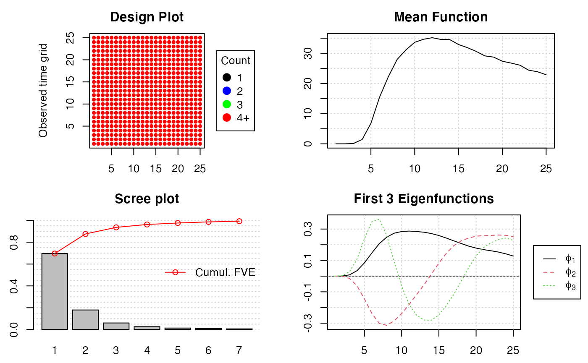
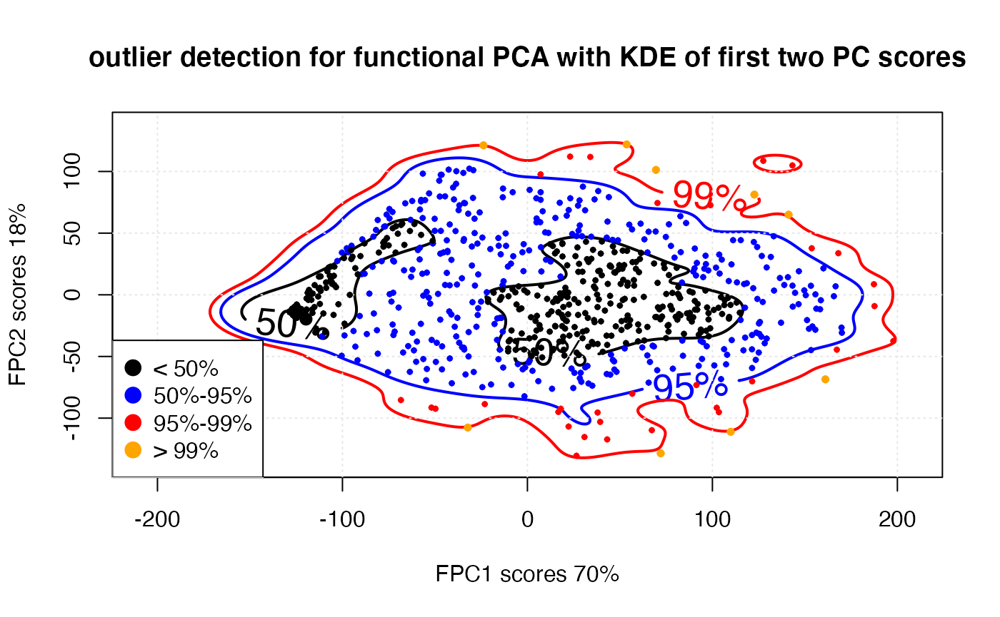
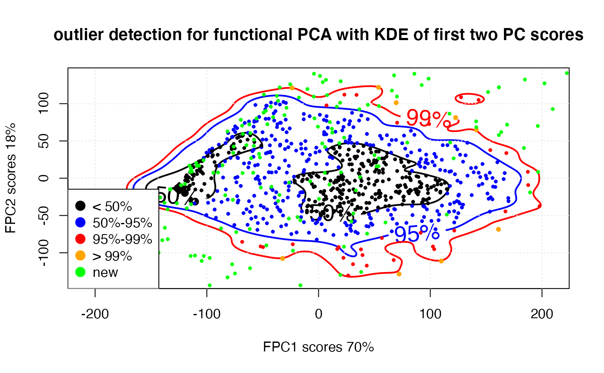

quick_start.RmdThis vigette was partally based on the github page given below
“Introduction to Data diff package.” (link)
install.packages("ddiff")To install the (development) GitHub version, you could use
devtools::install_github("amashadihossein/ddiff", ref = "dev") First, we need to load the package and generate the simulated datasets :
For this simulated dataset, we are looking at a real dataset containing the eggs laid from 789 medflies (Mediterranean fruit flies, Ceratitis capitata) during the first 25 days of their lives and simulated data set which contains three continuous variable and two categorical and binary variable.
sapply(d$identical$new, class)
#> ID Days nEggs nEggsRemain nm_1 nm_2
#> "integer" "integer" "integer" "integer" "numeric" "numeric"
#> nm_3 cat_1 cat_2 bin_1 bin_2
#> "numeric" "factor" "factor" "factor" "factor"
data.tree::FromListSimple(d)
#> levelName
#> 1 Root
#> 2 ¦--order
#> 3 ¦ ¦--old
#> 4 ¦ °--new
#> 5 ¦--attrs
#> 6 ¦ ¦--same
#> 7 ¦ ¦ ¦--old
#> 8 ¦ ¦ °--new
#> 9 ¦ °--different
#> 10 ¦ ¦--col_same
#> 11 ¦ ¦ ¦--old
#> 12 ¦ ¦ °--new
#> 13 ¦ °--col_diff
#> 14 ¦ ¦--old
#> 15 ¦ °--new
#> 16 ¦--identical
#> 17 ¦ ¦--old
#> 18 ¦ °--new
#> 19 °--records_added
#> 20 ¦--old
#> 21 °--new
arsenal::comparedf(d$records_added$new, d$records_added$old)
#> Compare Object
#>
#> Function Call:
#> arsenal::comparedf(x = d$records_added$new, y = d$records_added$old)
#>
#> Shared: 11 non-by variables and 11835 observations.
#> Not shared: 0 variables and 7890 observations.
#>
#> Differences found in 11/11 variables compared.
#> 0 variables compared have non-identical attributes.
arsenal::comparedf(d$order$new, d$order$old)
#> Compare Object
#>
#> Function Call:
#> arsenal::comparedf(x = d$order$new, y = d$order$old)
#>
#> Shared: 11 non-by variables and 19725 observations.
#> Not shared: 0 variables and 0 observations.
#>
#> Differences found in 11/11 variables compared.
#> 0 variables compared have non-identical attributes.
summary(arsenal::comparedf(d$order$new, d$order$old))
#>
#>
#> Table: Summary of data.frames
#>
#> version arg ncol nrow
#> -------- ------------ ----- ------
#> x d$order$new 11 19725
#> y d$order$old 11 19725
#>
#>
#>
#> Table: Summary of overall comparison
#>
#> statistic value
#> ------------------------------------------------------------ -------
#> Number of by-variables 0
#> Number of non-by variables in common 11
#> Number of variables compared 11
#> Number of variables in x but not y 0
#> Number of variables in y but not x 0
#> Number of variables compared with some values unequal 11
#> Number of variables compared with all values equal 0
#> Number of observations in common 19725
#> Number of observations in x but not y 0
#> Number of observations in y but not x 0
#> Number of observations with some compared variables unequal 19725
#> Number of observations with all compared variables equal 0
#> Number of values unequal 179338
#>
#>
#>
#> Table: Variables not shared
#>
#>
#> ------------------------
#> No variables not shared
#> ------------------------
#>
#>
#>
#> Table: Other variables not compared
#>
#>
#> --------------------------------
#> No other variables not compared
#> --------------------------------
#>
#>
#>
#> Table: Observations not shared
#>
#>
#> ---------------------------
#> No observations not shared
#> ---------------------------
#>
#>
#>
#> Table: Differences detected by variable
#>
#> var.x var.y n NAs
#> ------------ ------------ ------ ----
#> cat_1 cat_1 13162 0
#> nm_2 nm_2 19725 0
#> nm_3 nm_3 19725 0
#> cat_2 cat_2 13104 0
#> nm_1 nm_1 19725 0
#> nEggsRemain nEggsRemain 19220 0
#> Days Days 18929 0
#> bin_2 bin_2 9808 0
#> ID ID 19703 0
#> nEggs nEggs 16205 0
#> bin_1 bin_1 10032 0
#>
#>
#>
#> Table: Differences detected (179288 not shown)
#>
#> var.x var.y ..row.names.. values.x values.y row.x row.y
#> ------ ------ -------------- ----------- ----------- ------ ------
#> cat_1 cat_1 1 b a 1 1
#> cat_1 cat_1 3 c a 3 3
#> cat_1 cat_1 4 a c 4 4
#> cat_1 cat_1 5 a b 5 5
#> cat_1 cat_1 7 a b 7 7
#> cat_1 cat_1 10 b c 10 10
#> cat_1 cat_1 11 c b 11 11
#> cat_1 cat_1 12 c a 12 12
#> cat_1 cat_1 13 b a 13 13
#> cat_1 cat_1 14 c a 14 14
#> nm_2 nm_2 1 -2.645308 0.7059586 1 1
#> nm_2 nm_2 2 0.9765651 0.1843183 2 2
#> nm_2 nm_2 3 0.5223583 0.141461 3 3
#> nm_2 nm_2 4 0.8339484 0.5726792 4 4
#> nm_2 nm_2 5 1.70175 0.8574835 5 5
#> nm_2 nm_2 6 0.3717764 -0.6789667 6 6
#> nm_2 nm_2 7 0.3276322 0.3798053 7 7
#> nm_2 nm_2 8 -1.252964 -1.392024 8 8
#> nm_2 nm_2 9 1.275496 1.308331 9 9
#> nm_2 nm_2 10 1.741224 -0.0922484 10 10
#> nm_3 nm_3 1 0.02790921 -0.8367815 1 1
#> nm_3 nm_3 2 -0.5614884 -0.7166211 2 2
#> nm_3 nm_3 3 0.4634611 0.7006481 3 3
#> nm_3 nm_3 4 0.3379765 0.9165352 4 4
#> nm_3 nm_3 5 0.1447049 -0.3935223 5 5
#> nm_3 nm_3 6 -0.5940742 -1.310935 6 6
#> nm_3 nm_3 7 -0.1681214 -0.3736673 7 7
#> nm_3 nm_3 8 -0.6053956 0.4709945 8 8
#> nm_3 nm_3 9 -1.427639 0.1938273 9 9
#> nm_3 nm_3 10 0.6244527 -0.5180107 10 10
#> cat_2 cat_2 1 e f 1 1
#> cat_2 cat_2 2 e f 2 2
#> cat_2 cat_2 5 f e 5 5
#> cat_2 cat_2 6 e f 6 6
#> cat_2 cat_2 10 e f 10 10
#> cat_2 cat_2 11 e d 11 11
#> cat_2 cat_2 12 f d 12 12
#> cat_2 cat_2 14 d e 14 14
#> cat_2 cat_2 15 e d 15 15
#> cat_2 cat_2 16 e d 16 16
#> nm_1 nm_1 1 -0.9116113 -1.189454 1 1
#> nm_1 nm_1 2 -1.472096 0.3885812 2 2
#> nm_1 nm_1 3 1.728832 -0.3443333 3 3
#> nm_1 nm_1 4 -1.252723 -0.5478961 4 4
#> nm_1 nm_1 5 -0.1742914 0.9806622 5 5
#> nm_1 nm_1 6 0.3431024 -0.236646 6 6
#> nm_1 nm_1 7 -0.2211182 0.8097397 7 7
#> nm_1 nm_1 8 -1.6526 -0.7447795 8 8
#> nm_1 nm_1 9 -0.9377886 -0.259787 9 9
#> nm_1 nm_1 10 0.22769 -0.1830838 10 10
#>
#>
#>
#> Table: Non-identical attributes
#>
#>
#> ----------------------------
#> No non-identical attributes
#> ----------------------------
tryCatch(compareDF::compare_df(d$order$new, d$order$old, c("Days", "ID")), error = function(e) "The two dataframes are similar after reordering")
#> Found factor columns! Will be casted to character for comparison!
#> Found factor columns! Will be casted to character for comparison!
#> Grouping columns
#> [1] "The two dataframes are similar after reordering"
#compareDF::compare_df(d$records_added$new, d$records_added$old, c("Days", "ID"))
diffdf::diffdf(d$order$new, d$order$old)
#> Warning in diffdf::diffdf(d$order$new, d$order$old):
#> Not all Values Compared Equal
#> Differences found between the objects!
#>
#> A summary is given below.
#>
#> Not all Values Compared Equal
#> First 10 of 11 rows are shown in table below
#>
#> ================================
#> Variable No of Differences
#> --------------------------------
#> cat_1 13162
#> nm_2 19725
#> nm_3 19725
#> cat_2 13104
#> nm_1 19725
#> nEggsRemain 19220
#> Days 18929
#> bin_2 9808
#> ID 19703
#> nEggs 16205
#> --------------------------------
#>
#>
#> First 10 of 13162 rows are shown in table below
#>
#> ========================================
#> VARIABLE ..ROWNUMBER.. BASE COMPARE
#> ----------------------------------------
#> cat_1 1 b a
#> cat_1 3 c a
#> cat_1 4 a c
#> cat_1 5 a b
#> cat_1 7 a b
#> cat_1 10 b c
#> cat_1 11 c b
#> cat_1 12 c a
#> cat_1 13 b a
#> cat_1 14 c a
#> ----------------------------------------
#>
#>
#> First 10 of 19725 rows are shown in table below
#>
#> =================================================
#> VARIABLE ..ROWNUMBER.. BASE COMPARE
#> -------------------------------------------------
#> nm_2 1 -2.6453081 0.7059586
#> nm_2 2 0.9765651 0.1843183
#> nm_2 3 0.5223583 0.1414610
#> nm_2 4 0.8339484 0.5726792
#> nm_2 5 1.7017496 0.8574835
#> nm_2 6 0.3717764 -0.6789667
#> nm_2 7 0.3276322 0.3798053
#> nm_2 8 -1.2529641 -1.3920236
#> nm_2 9 1.2754964 1.3083308
#> nm_2 10 1.7412238 -0.0922484
#> -------------------------------------------------
#>
#>
#> First 10 of 19725 rows are shown in table below
#>
#> ==================================================
#> VARIABLE ..ROWNUMBER.. BASE COMPARE
#> --------------------------------------------------
#> nm_3 1 0.02790921 -0.8367815
#> nm_3 2 -0.56148837 -0.7166211
#> nm_3 3 0.46346112 0.7006481
#> nm_3 4 0.33797646 0.9165352
#> nm_3 5 0.14470487 -0.3935223
#> nm_3 6 -0.59407416 -1.3109347
#> nm_3 7 -0.16812138 -0.3736673
#> nm_3 8 -0.60539558 0.4709945
#> nm_3 9 -1.42763931 0.1938273
#> nm_3 10 0.62445273 -0.5180107
#> --------------------------------------------------
#>
#>
#> First 10 of 13104 rows are shown in table below
#>
#> ========================================
#> VARIABLE ..ROWNUMBER.. BASE COMPARE
#> ----------------------------------------
#> cat_2 1 e f
#> cat_2 2 e f
#> cat_2 5 f e
#> cat_2 6 e f
#> cat_2 10 e f
#> cat_2 11 e d
#> cat_2 12 f d
#> cat_2 14 d e
#> cat_2 15 e d
#> cat_2 16 e d
#> ----------------------------------------
#>
#>
#> First 10 of 19725 rows are shown in table below
#>
#> =================================================
#> VARIABLE ..ROWNUMBER.. BASE COMPARE
#> -------------------------------------------------
#> nm_1 1 -0.9116113 -1.1894537
#> nm_1 2 -1.4720960 0.3885812
#> nm_1 3 1.7288322 -0.3443333
#> nm_1 4 -1.2527228 -0.5478961
#> nm_1 5 -0.1742914 0.9806622
#> nm_1 6 0.3431024 -0.2366460
#> nm_1 7 -0.2211182 0.8097397
#> nm_1 8 -1.6526003 -0.7447795
#> nm_1 9 -0.9377886 -0.2597870
#> nm_1 10 0.2276900 -0.1830838
#> -------------------------------------------------
#>
#>
#> First 10 of 19220 rows are shown in table below
#>
#> ===========================================
#> VARIABLE ..ROWNUMBER.. BASE COMPARE
#> -------------------------------------------
#> nEggsRemain 1 56 717
#> nEggsRemain 2 687 717
#> nEggsRemain 3 13 717
#> nEggsRemain 4 87 717
#> nEggsRemain 5 343 717
#> nEggsRemain 6 205 717
#> nEggsRemain 7 202 717
#> nEggsRemain 8 333 717
#> nEggsRemain 9 0 717
#> nEggsRemain 10 233 717
#> -------------------------------------------
#>
#>
#> First 10 of 18929 rows are shown in table below
#>
#> ========================================
#> VARIABLE ..ROWNUMBER.. BASE COMPARE
#> ----------------------------------------
#> Days 1 17 1
#> Days 2 1 2
#> Days 3 5 3
#> Days 4 21 4
#> Days 5 4 5
#> Days 6 10 6
#> Days 7 18 7
#> Days 8 18 8
#> Days 9 7 9
#> Days 10 12 10
#> ----------------------------------------
#>
#>
#> First 10 of 9808 rows are shown in table below
#>
#> ========================================
#> VARIABLE ..ROWNUMBER.. BASE COMPARE
#> ----------------------------------------
#> bin_2 1 F M
#> bin_2 3 F M
#> bin_2 4 F M
#> bin_2 10 F M
#> bin_2 13 F M
#> bin_2 14 F M
#> bin_2 19 F M
#> bin_2 24 F M
#> bin_2 25 M F
#> bin_2 26 M F
#> ----------------------------------------
#>
#>
#> First 10 of 19703 rows are shown in table below
#>
#> ========================================
#> VARIABLE ..ROWNUMBER.. BASE COMPARE
#> ----------------------------------------
#> ID 1 792 1
#> ID 2 136 1
#> ID 3 566 1
#> ID 4 85 1
#> ID 5 36 1
#> ID 6 347 1
#> ID 7 468 1
#> ID 8 572 1
#> ID 9 518 1
#> ID 10 464 1
#> ----------------------------------------
#>
#>
#> First 10 of 16205 rows are shown in table below
#>
#> ========================================
#> VARIABLE ..ROWNUMBER.. BASE COMPARE
#> ----------------------------------------
#> nEggs 1 62 0
#> nEggs 4 8 0
#> nEggs 6 52 0
#> nEggs 7 32 0
#> nEggs 8 32 0
#> nEggs 9 2 0
#> nEggs 10 43 0
#> nEggs 11 0 27
#> nEggs 12 0 49
#> nEggs 13 0 37
#> ----------------------------------------
#>
#>
#> First 10 of 10032 rows are shown in table below
#>
#> ========================================
#> VARIABLE ..ROWNUMBER.. BASE COMPARE
#> ----------------------------------------
#> bin_1 1 N Y
#> bin_1 3 Y N
#> bin_1 4 Y N
#> bin_1 12 Y N
#> bin_1 13 N Y
#> bin_1 14 N Y
#> bin_1 16 N Y
#> bin_1 18 N Y
#> bin_1 19 N Y
#> bin_1 21 Y N
#> ----------------------------------------
diffdf::diffdf(d$records_added$new, d$records_added$old)
#> Warning in diffdf::diffdf(d$records_added$new, d$records_added$old):
#> There are rows in BASE that are not in COMPARE !!
#> Not all Values Compared Equal
#> Differences found between the objects!
#>
#> A summary is given below.
#>
#> There are rows in BASE that are not in COMPARE !!
#> First 10 of 7890 rows are shown in table below
#>
#> ===============
#> ..ROWNUMBER..
#> ---------------
#> 11836
#> 11837
#> 11838
#> 11839
#> 11840
#> 11841
#> 11842
#> 11843
#> 11844
#> 11845
#> ---------------
#>
#> Not all Values Compared Equal
#> First 10 of 11 rows are shown in table below
#>
#> ================================
#> Variable No of Differences
#> --------------------------------
#> ID 11815
#> Days 9465
#> nEggs 9265
#> nEggsRemain 11605
#> nm_1 11820
#> nm_2 11820
#> nm_3 11820
#> cat_1 7890
#> cat_2 7863
#> bin_1 5948
#> --------------------------------
#>
#>
#> First 10 of 11815 rows are shown in table below
#>
#> ========================================
#> VARIABLE ..ROWNUMBER.. BASE COMPARE
#> ----------------------------------------
#> ID 16 1 2
#> ID 17 1 2
#> ID 18 1 2
#> ID 19 1 2
#> ID 20 1 2
#> ID 21 1 2
#> ID 22 1 2
#> ID 23 1 2
#> ID 24 1 2
#> ID 25 1 2
#> ----------------------------------------
#>
#>
#> First 10 of 9465 rows are shown in table below
#>
#> ========================================
#> VARIABLE ..ROWNUMBER.. BASE COMPARE
#> ----------------------------------------
#> Days 16 16 1
#> Days 17 17 2
#> Days 18 18 3
#> Days 19 19 4
#> Days 20 20 5
#> Days 21 21 6
#> Days 22 22 7
#> Days 23 23 8
#> Days 24 24 9
#> Days 25 25 10
#> ----------------------------------------
#>
#>
#> First 10 of 9265 rows are shown in table below
#>
#> ========================================
#> VARIABLE ..ROWNUMBER.. BASE COMPARE
#> ----------------------------------------
#> nEggs 16 100 0
#> nEggs 17 43 0
#> nEggs 18 95 0
#> nEggs 19 37 0
#> nEggs 20 57 0
#> nEggs 21 76 0
#> nEggs 22 58 0
#> nEggs 23 73 55
#> nEggs 24 65 16
#> nEggs 25 38 48
#> ----------------------------------------
#>
#>
#> First 10 of 11605 rows are shown in table below
#>
#> ===========================================
#> VARIABLE ..ROWNUMBER.. BASE COMPARE
#> -------------------------------------------
#> nEggsRemain 16 717 434
#> nEggsRemain 17 717 434
#> nEggsRemain 18 717 434
#> nEggsRemain 19 717 434
#> nEggsRemain 20 717 434
#> nEggsRemain 21 717 434
#> nEggsRemain 22 717 434
#> nEggsRemain 23 717 434
#> nEggsRemain 24 717 434
#> nEggsRemain 25 717 434
#> -------------------------------------------
#>
#>
#> First 10 of 11820 rows are shown in table below
#>
#> ===================================================
#> VARIABLE ..ROWNUMBER.. BASE COMPARE
#> ---------------------------------------------------
#> nm_1 16 -0.260584627 0.5348300
#> nm_1 17 -0.572505510 -0.1237680
#> nm_1 18 1.406558407 2.1193033
#> nm_1 19 0.504270508 -1.5134759
#> nm_1 20 -0.700280926 0.2551949
#> nm_1 21 1.423423479 1.5047414
#> nm_1 22 -1.042658120 -0.3900805
#> nm_1 23 0.001169195 0.5793582
#> nm_1 24 1.090455166 0.2103558
#> nm_1 25 -0.998715247 0.9440428
#> ---------------------------------------------------
#>
#>
#> First 10 of 11820 rows are shown in table below
#>
#> ==================================================
#> VARIABLE ..ROWNUMBER.. BASE COMPARE
#> --------------------------------------------------
#> nm_2 16 3.3982715 0.01281095
#> nm_2 17 0.5256780 -0.16884718
#> nm_2 18 -2.0469354 0.20362409
#> nm_2 19 1.3284540 0.25831011
#> nm_2 20 1.5291845 0.73014540
#> nm_2 21 1.3597775 -0.03922737
#> nm_2 22 0.8174315 0.23381713
#> nm_2 23 0.4104729 -1.14338624
#> nm_2 24 -1.4931735 -1.80535793
#> nm_2 25 0.2348954 1.46814920
#> --------------------------------------------------
#>
#>
#> First 10 of 11820 rows are shown in table below
#>
#> =================================================
#> VARIABLE ..ROWNUMBER.. BASE COMPARE
#> -------------------------------------------------
#> nm_3 16 -0.1992777 -0.2366218
#> nm_3 17 0.4374444 0.6324166
#> nm_3 18 -0.3039818 -0.4826879
#> nm_3 19 0.1549797 0.4347658
#> nm_3 20 0.6277164 -0.9641033
#> nm_3 21 1.2402106 1.0319034
#> nm_3 22 -1.6879909 -0.1694670
#> nm_3 23 -0.9830079 1.0157197
#> nm_3 24 -0.4078018 -0.0224172
#> nm_3 25 0.6147617 0.4064094
#> -------------------------------------------------
#>
#>
#> First 10 of 7890 rows are shown in table below
#>
#> ========================================
#> VARIABLE ..ROWNUMBER.. BASE COMPARE
#> ----------------------------------------
#> cat_1 16 a c
#> cat_1 18 b a
#> cat_1 20 a b
#> cat_1 21 c b
#> cat_1 22 b c
#> cat_1 24 b a
#> cat_1 25 c b
#> cat_1 27 b c
#> cat_1 28 a b
#> cat_1 31 b c
#> ----------------------------------------
#>
#>
#> First 10 of 7863 rows are shown in table below
#>
#> ========================================
#> VARIABLE ..ROWNUMBER.. BASE COMPARE
#> ----------------------------------------
#> cat_2 16 d f
#> cat_2 17 d e
#> cat_2 18 d f
#> cat_2 19 f d
#> cat_2 20 f e
#> cat_2 21 d f
#> cat_2 26 f d
#> cat_2 28 f e
#> cat_2 33 d e
#> cat_2 35 f e
#> ----------------------------------------
#>
#>
#> First 10 of 5948 rows are shown in table below
#>
#> ========================================
#> VARIABLE ..ROWNUMBER.. BASE COMPARE
#> ----------------------------------------
#> bin_1 16 Y N
#> bin_1 18 Y N
#> bin_1 20 Y N
#> bin_1 21 N Y
#> bin_1 22 N Y
#> bin_1 29 Y N
#> bin_1 35 Y N
#> bin_1 39 N Y
#> bin_1 40 N Y
#> bin_1 41 N Y
#> ----------------------------------------
#>
#>
#> First 10 of 5851 rows are shown in table below
#>
#> ========================================
#> VARIABLE ..ROWNUMBER.. BASE COMPARE
#> ----------------------------------------
#> bin_2 19 M F
#> bin_2 21 M F
#> bin_2 24 M F
#> bin_2 26 F M
#> bin_2 29 F M
#> bin_2 30 F M
#> bin_2 31 F M
#> bin_2 33 M F
#> bin_2 35 F M
#> bin_2 36 M F
#> ----------------------------------------
janitor::compare_df_cols(d$order$new, d$order$old, d$records_added$new, d$records_added$old)
#> column_name d$order$new d$order$old d$records_added$new d$records_added$old
#> 1 bin_1 factor factor factor factor
#> 2 bin_2 factor factor factor factor
#> 3 cat_1 factor factor factor factor
#> 4 cat_2 factor factor factor factor
#> 5 Days integer integer integer integer
#> 6 ID integer integer integer integer
#> 7 nEggs integer integer integer integer
#> 8 nEggsRemain integer integer integer integer
#> 9 nm_1 numeric numeric numeric numeric
#> 10 nm_2 numeric numeric numeric numeric
#> 11 nm_3 numeric numeric numeric numeric
waldo::compare(d$order$new, d$order$old)
#> names(old) | names(new)
#> [1] "cat_1" - "ID" [1]
#> [2] "nm_2" - "Days" [2]
#> [3] "nm_3" - "nEggs" [3]
#> [4] "cat_2" - "nEggsRemain" [4]
#> [5] "nm_1" | "nm_1" [5]
#> [6] "nEggsRemain" - "nm_2" [6]
#> [7] "Days" - "nm_3" [7]
#> [8] "bin_2" - "cat_1" [8]
#> [9] "ID" - "cat_2" [9]
#> [10] "nEggs" - "bin_1" [10]
#> ... ... ... and 1 more ...
#>
#> attr(old, 'row.names') | attr(new, 'row.names')
#> [1] 16517 - 1 [1]
#> [2] 2901 - 2 [2]
#> [3] 11605 - 3 [3]
#> [4] 1871 - 4 [4]
#> [5] 729 - 5 [5]
#> [6] 7410 - 6 [6]
#> [7] 9668 - 7 [7]
#> [8] 11768 - 8 [8]
#> [9] 10707 - 9 [9]
#> [10] 9612 - 10 [10]
#> ... ... ... and 19715 more ...
#>
#> `old$cat_1[1:49]`: "b" "c" "c" "a" "a" "c" "a" "c" "c" and 56 more...
#> `new$cat_1[1:59]`: "a" "c" "a" "c" "b" "c" ...
#>
#> `old$cat_1[50:1035]`: "c" "c" "a" "c" "a" "c" "c" "b" "a" "b" and 1074 more...
#> `new$cat_1[60:1044]`: "c" "c" "a" "b" "a" "b" ...
#>
#> `old$cat_1[1036:1202]`: "a" "b" "c" "a" "c" "a" "c" "a" "a" and 173 more...
#> `new$cat_1[1045:1212]`: "a" "b" "c" "c" "c" "b" "a" "c" "a" "c" ...
#>
#> `old$cat_1[1203:2039]`: "c" "a" "a" "c" "a" "a" "a" "c" "c" "a" and 912 more...
#> `new$cat_1[1213:2049]`: "c" "a" "a" "a" "c" "c" "b" "b" "a" ...
#>
#> `old$cat_1[2041:2200]`: "c" "c" "a" "b" "b" "b" "b" "c" "b" "a" and 163 more...
#> `new$cat_1[2051:2209]`: "c" "c" "a" "c" "a" "b" "a" "a" "c" "c" ...
#>
#> `old$cat_1[2202:2460]`: "c" "a" "a" "b" "b" "b" "c" "b" "b" and 271 more...
#> `new$cat_1[2211:2469]`: "c" "a" "a" "a" "a" "a" "c" "a" "c" "b" ...
#>
#> `old$cat_1[2464:3082]`: "b" "b" "c" "c" "a" "c" "a" "c" "a" and 683 more...
#> `new$cat_1[2473:3092]`: "b" "b" "c" "a" "c" "c" "a" "a" "a" ...
#>
#> `old$cat_1[3085:4347]`: "b" "c" "a" "c" "c" "a" "a" "a" "a" "c" and 1382 more...
#> `new$cat_1[3095:4357]`: "b" "c" "a" "a" "b" "a" "b" "a" "a" "b" ...
#>
#> And 444 more differences ...
waldo::compare(d$records_added$new, d$records_added$old)
#> `attr(old, 'row.names')[13:28]`: 13 14 15 16 17 18 19 20 21 22 and 6 more...
#> `attr(new, 'row.names')[13:18]`: 13 14 15 ...
#>
#> `attr(old, 'row.names')[38:53]`: 38 39 40 41 42 43 44 45 46 47 and 6 more...
#> `attr(new, 'row.names')[28:33]`: 38 39 40 ...
#>
#> `attr(old, 'row.names')[63:78]`: 63 64 65 66 67 68 69 70 71 72 and 6 more...
#> `attr(new, 'row.names')[43:48]`: 63 64 65 ...
#>
#> `attr(old, 'row.names')[88:103]`: 88 89 90 91 92 93 94 95 96 97 and 6 more...
#> `attr(new, 'row.names')[58:63]`: 88 89 90 ...
#>
#> attr(old, 'row.names') | attr(new, 'row.names')
#> [113] 113 | 113 [73]
#> [114] 114 | 114 [74]
#> [115] 115 | 115 [75]
#> [116] 116 -
#> [117] 117 -
#> [118] 118 -
#> [119] 119 -
#> [120] 120 -
#> [121] 121 -
#> [122] 122 -
#> ... ... ... and 6 more ...
#>
#> attr(old, 'row.names') | attr(new, 'row.names')
#> [138] 138 | 138 [88]
#> [139] 139 | 139 [89]
#> [140] 140 | 140 [90]
#> [141] 141 - 151 [91]
#> [142] 142 - 152 [92]
#> [143] 143 - 153 [93]
#> [144] 144 - 154 [94]
#> [145] 145 - 155 [95]
#> [146] 146 - 156 [96]
#> [147] 147 - 157 [97]
#> ... ... ... and 19456 more ...
#>
#> attr(old, 'row.names') | attr(new, 'row.names')
#> [19613] 19613 | 19613 [11773]
#> [19614] 19614 | 19614 [11774]
#> [19615] 19615 | 19615 [11775]
#> [19616] 19616 -
#> [19617] 19617 -
#> [19618] 19618 -
#> [19619] 19619 -
#> [19620] 19620 -
#> [19621] 19621 -
#> [19622] 19622 -
#> ... ... ... and 6 more ...
#>
#> attr(old, 'row.names') | attr(new, 'row.names')
#> [19638] 19638 | 19638 [11788]
#> [19639] 19639 | 19639 [11789]
#> [19640] 19640 | 19640 [11790]
#> [19641] 19641 -
#> [19642] 19642 -
#> [19643] 19643 -
#> [19644] 19644 -
#> [19645] 19645 -
#> [19646] 19646 -
#> [19647] 19647 -
#> ... ... ... and 6 more ...
#>
#> attr(old, 'row.names') | attr(new, 'row.names')
#> [19663] 19663 | 19663 [11803]
#> [19664] 19664 | 19664 [11804]
#> [19665] 19665 | 19665 [11805]
#> [19666] 19666 -
#> [19667] 19667 -
#> [19668] 19668 -
#> [19669] 19669 -
#> [19670] 19670 -
#> [19671] 19671 -
#> [19672] 19672 -
#> ... ... ... and 6 more ...
#>
#> attr(old, 'row.names') | attr(new, 'row.names')
#> [19688] 19688 | 19688 [11818]
#> [19689] 19689 | 19689 [11819]
#> [19690] 19690 | 19690 [11820]
#> [19691] 19691 -
#> [19692] 19692 -
#> [19693] 19693 -
#> [19694] 19694 -
#> [19695] 19695 -
#> [19696] 19696 -
#> [19697] 19697 -
#> ... ... ... and 6 more ...
#>
#> And 679 more differences ...To compare two datasets, simply pass them to the
ddiff_form function:
ddiff_rpt <- ddiff_form(d$identical$new, d$identical$old, c("ID", "Days"))The structure of the output is a list which contains 7 indicator
given below and arsenal::comparedf object. For more details
and useage of the arsenal::comparedf, please refer vignettes
for more detail regarding generating SAS-like report from comparedf
object.
The each indicator is corresponding to the following criterion:
ddiff_rpt[1:5]
#> $identical
#> [1] TRUE
#>
#> $attributes_match
#> [1] TRUE
#>
#> $column_match
#> [1] TRUE
#>
#> $row_match
#> [1] TRUE
#>
#> $info_match
#> [1] TRUE
ddiff_rpt[7]
#> $comparedf
#> Compare Object
#>
#> Function Call:
#> arsenal::comparedf(x = dat1, y = dat2)
#>
#> Shared: 12 non-by variables and 19725 observations.
#> Not shared: 0 variables and 0 observations.
#>
#> Differences found in 0/12 variables compared.
#> 0 variables compared have non-identical attributes.
ddiff_rpt <- ddiff_form(d$attrs$different$col_same$new, d$attrs$different$col_same$old, c("ID", "Days"))
ddiff_rpt
#> $identical
#> [1] FALSE
#>
#> $attributes_match
#> [1] FALSE
#>
#> $column_match
#> [1] TRUE
#>
#> $row_match
#> [1] TRUE
#>
#> $info_match
#> [1] TRUE
#>
#> $message
#> [1] "attributes of data1 and data2 are different"
#>
#> $comparedf
#> Compare Object
#>
#> Function Call:
#> arsenal::comparedf(x = dat1, y = dat2)
#>
#> Shared: 12 non-by variables and 19725 observations.
#> Not shared: 0 variables and 0 observations.
#>
#> Differences found in 0/12 variables compared.
#> 0 variables compared have non-identical attributes.
ddiff_rpt <- ddiff_form(d$attrs$same$new, d$attrs$same$old, c("ID", "Days"))
ddiff_rpt
#> $identical
#> [1] FALSE
#>
#> $attributes_match
#> [1] TRUE
#>
#> $column_match
#> [1] TRUE
#>
#> $row_match
#> [1] TRUE
#>
#> $info_match
#> [1] FALSE
#>
#> $message
#> [1] "data1 and data2 are identical"
#>
#> $comparedf
#> Compare Object
#>
#> Function Call:
#> arsenal::comparedf(x = dat1, y = dat2)
#>
#> Shared: 12 non-by variables and 19725 observations.
#> Not shared: 0 variables and 0 observations.
#>
#> Differences found in 5/12 variables compared.
#> 0 variables compared have non-identical attributes.
ddiff_rpt <- ddiff_form(d$attrs$different$col_diff$new, d$attrs$different$col_diff$old, c("ID", "Days"))
ddiff_rpt
#> $identical
#> [1] FALSE
#>
#> $attributes_match
#> [1] TRUE
#>
#> $column_match
#> [1] FALSE
#>
#> $row_match
#> [1] TRUE
#>
#> $info_match
#> [1] TRUE
#>
#> $message
#> [1] "Column names of data1 and data2 are different"
#>
#> $comparedf
#> Compare Object
#>
#> Function Call:
#> arsenal::comparedf(x = dat1, y = dat2)
#>
#> Shared: 12 non-by variables and 19725 observations.
#> Not shared: 1 variables and 0 observations.
#>
#> Differences found in 0/12 variables compared.
#> 0 variables compared have non-identical attributes.
ddiff_rpt <- ddiff_form(d$order$new, d$order$old, c("ID", "Days"))
ddiff_rpt
#> $identical
#> [1] FALSE
#>
#> $attributes_match
#> [1] TRUE
#>
#> $column_match
#> [1] TRUE
#>
#> $row_match
#> [1] TRUE
#>
#> $info_match
#> [1] TRUE
#>
#> $message
#> [1] "Data table contents and attr names match: differences are limited to row or col orders"
#>
#> $comparedf
#> Compare Object
#>
#> Function Call:
#> arsenal::comparedf(x = dat1, y = dat2)
#>
#> Shared: 12 non-by variables and 19725 observations.
#> Not shared: 0 variables and 0 observations.
#>
#> Differences found in 12/12 variables compared.
#> 0 variables compared have non-identical attributes.There are two main categories we are looking at when we compare datasets which are individual difference on each variables in each datasets and groups difference. All packages mentioned above address the “form” “text-based” diff. The information-based diff is complementary to “text-based” diff (but also quite more challenging to implement as essentially it is an unsupervised learning problem)
For each individual variable, there are three main types of variables
which are continuous, categorical and binary. The last two could be
combined into one category while in pharmaceutical settings, we make
distinction between the two. Before we look into the difference. First,
we need to know type of variables in each datasets. The
get_varialbe_class is designed for this purpose.
#information content diff
ddiff_rpt <- ddiff_class(d$identical$new, d$identical$old, c("ID", "Days"))
#ddiff_rpt
data.tree::FromListSimple(ddiff_rpt)
#> levelName
#> 1 Root
#> 2 ¦--key
#> 3 ¦--data_1
#> 4 ¦ ¦--continous
#> 5 ¦ ¦--categorical
#> 6 ¦ °--binary
#> 7 °--data_2
#> 8 ¦--continous
#> 9 ¦--categorical
#> 10 °--binary
str(ddiff_rpt)
#> List of 3
#> $ key :List of 1
#> ..$ : chr [1:2] "ID" "Days"
#> $ data_1:List of 3
#> ..$ continous :List of 1
#> .. ..$ : chr [1:7] "ID" "Days" "nEggs" "nEggsRemain" ...
#> ..$ categorical:List of 1
#> .. ..$ : chr [1:2] "cat_1" "cat_2"
#> ..$ binary :List of 1
#> .. ..$ : chr [1:2] "bin_1" "bin_2"
#> $ data_2:List of 3
#> ..$ continous :List of 1
#> .. ..$ : chr [1:7] "ID" "Days" "nEggs" "nEggsRemain" ...
#> ..$ categorical:List of 1
#> .. ..$ : chr [1:2] "cat_1" "cat_2"
#> ..$ binary :List of 1
#> .. ..$ : chr [1:2] "bin_1" "bin_2"After knowing the types of variables, we could obtain custom difference metrics on each variables. For example, we could look at the difference by min, max, median, mean and standard error for continuous and frequency difference for categorical and binary variables shown below.
result <- ddiff_info_univariate(d$identical$new, d$identical$old, c("ID", "Days"))
result$result_con
#> stat variable data1 data2
#> 1 min Days 1.000000e+00 1.000000e+00
#> 2 min ID 1.000000e+00 1.000000e+00
#> 3 min nEggs 0.000000e+00 0.000000e+00
#> 4 min nEggsRemain 0.000000e+00 0.000000e+00
#> 5 min nm_1 -4.196442e+00 -4.196442e+00
#> 6 min nm_2 -3.479414e+00 -3.479414e+00
#> 7 min nm_3 -3.580228e+00 -3.580228e+00
#> 8 max Days 2.500000e+01 2.500000e+01
#> 9 max ID 1.000000e+03 1.000000e+03
#> 10 max nEggs 1.400000e+02 1.400000e+02
#> 11 max nEggsRemain 1.757000e+03 1.757000e+03
#> 12 max nm_1 3.992569e+00 3.992569e+00
#> 13 max nm_2 4.006142e+00 4.006142e+00
#> 14 max nm_3 4.118953e+00 4.118953e+00
#> 15 med Days 1.300000e+01 1.300000e+01
#> 16 med ID 4.800000e+02 4.800000e+02
#> 17 med nEggs 1.600000e+01 1.600000e+01
#> 18 med nEggsRemain 2.230000e+02 2.230000e+02
#> 19 med nm_1 -5.383370e-03 -5.383370e-03
#> 20 med nm_2 3.603452e-03 3.603452e-03
#> 21 med nm_3 1.597123e-02 1.597123e-02
#> 22 mean Days 1.300000e+01 1.300000e+01
#> 23 mean ID 4.757250e+02 4.757250e+02
#> 24 mean nEggs 2.330910e+01 2.330910e+01
#> 25 mean nEggsRemain 2.953232e+02 2.953232e+02
#> 26 mean nm_1 -3.207803e-03 -3.207803e-03
#> 27 mean nm_2 3.202436e-03 3.202436e-03
#> 28 mean nm_3 9.157477e-03 9.157477e-03
#> 29 standard error Days 5.134571e-02 5.134571e-02
#> 30 standard error ID 1.987285e+00 1.987285e+00
#> 31 standard error nEggs 1.816081e-01 1.816081e-01
#> 32 standard error nEggsRemain 2.103451e+00 2.103451e+00
#> 33 standard error nm_1 7.064353e-03 7.064353e-03
#> 34 standard error nm_2 7.115586e-03 7.115586e-03
#> 35 standard error nm_3 7.111697e-03 7.111697e-03
result$result_cat
#> [[1]]
#> cat_1 data1 data2
#> 1 a 6674 6674
#> 2 b 6526 6526
#> 3 c 6525 6525
#>
#> [[2]]
#> cat_2 data1 data2
#> 1 d 6642 6642
#> 2 e 6429 6429
#> 3 f 6654 6654
result$result_bin
#> [[1]]
#> bin_1 data1 data2
#> 1 N 9876 9876
#> 2 Y 9849 9849
#>
#> [[2]]
#> bin_2 data1 data2
#> 1 F 9859 9859
#> 2 M 9866 9866As shown in the above example, we offer some of the default metrics to look at for each types of variables. You could also apply some custom metrics as shown below. Note that the input metrics must be a list of funciton.
result <- ddiff_info_univariate(d$identical$new, d$identical$old, c("ID", "Days"), measure_arg_con = list(min = min, max = max, med = median))
result$result_con
#> stat variable data1 data2
#> 1 min Days 1.000000e+00 1.000000e+00
#> 2 min ID 1.000000e+00 1.000000e+00
#> 3 min nEggs 0.000000e+00 0.000000e+00
#> 4 min nEggsRemain 0.000000e+00 0.000000e+00
#> 5 min nm_1 -4.196442e+00 -4.196442e+00
#> 6 min nm_2 -3.479414e+00 -3.479414e+00
#> 7 min nm_3 -3.580228e+00 -3.580228e+00
#> 8 max Days 2.500000e+01 2.500000e+01
#> 9 max ID 1.000000e+03 1.000000e+03
#> 10 max nEggs 1.400000e+02 1.400000e+02
#> 11 max nEggsRemain 1.757000e+03 1.757000e+03
#> 12 max nm_1 3.992569e+00 3.992569e+00
#> 13 max nm_2 4.006142e+00 4.006142e+00
#> 14 max nm_3 4.118953e+00 4.118953e+00
#> 15 med Days 1.300000e+01 1.300000e+01
#> 16 med ID 4.800000e+02 4.800000e+02
#> 17 med nEggs 1.600000e+01 1.600000e+01
#> 18 med nEggsRemain 2.230000e+02 2.230000e+02
#> 19 med nm_1 -5.383370e-03 -5.383370e-03
#> 20 med nm_2 3.603452e-03 3.603452e-03
#> 21 med nm_3 1.597123e-02 1.597123e-02
result$result_cat
#> [[1]]
#> cat_1 data1 data2
#> 1 a 6674 6674
#> 2 b 6526 6526
#> 3 c 6525 6525
#>
#> [[2]]
#> cat_2 data1 data2
#> 1 d 6642 6642
#> 2 e 6429 6429
#> 3 f 6654 6654
result$result_bin
#> [[1]]
#> bin_1 data1 data2
#> 1 N 9876 9876
#> 2 Y 9849 9849
#>
#> [[2]]
#> bin_2 data1 data2
#> 1 F 9859 9859
#> 2 M 9866 9866
#You can write math expressions, e.g. $Y = X\beta + \epsilon$, footnotes^[A footnote here.], and tables, e.g. using `knitr::kable()`.For each variables in corresponding datasets, we could treat them as
independent variables or we could view them as correlated variables
where they are generated under some multivariate distribution. The
get_varialbe_multi_stat is designed for obtaining custom
difference metrics on these variables.
For continuous variables, the default metric is set to be the variance-covariance matrix for multivariate case. The default metric for categorical and binary variables are contingency table and confusion matrix.
#Multivariate information diff
ddiff_rpt <- ddiff_info_multivariate(d$records_added$old, d$records_added$new, c("ID", "Days"), c("nEggs" , "nEggsRemain"))
ddiff_rpt
#> $result_con
#> $result_con$cov
#> $result_con$cov[[1]]
#> nm_1 nm_2 nm_3
#> nm_1 0.984655473 0.00521626 -0.009788453
#> nm_2 0.005216260 0.98981540 -0.008064050
#> nm_3 -0.009788453 -0.00806405 1.011318592
#>
#> $result_con$cov[[2]]
#> nm_1 nm_2 nm_3
#> nm_1 0.984655473 0.00521626 -0.009788453
#> nm_2 0.005216260 0.98981540 -0.008064050
#> nm_3 -0.009788453 -0.00806405 1.011318592For lower dimensional data, we could compare the variance-covariance directly while for high dimensional data, this approach would be computationally expensive. One possible way around is that, we could apply dimension reduction methods on this case. For example, we could look at the difference by projecting the data into two dimension plane and compare them directly.
#pca_multi_stat(d$records_added$old, d$records_added$new, c("ID", "Days"), ddiff_rpt)
generate_test_data <- function(n){
#n = 100
set.seed(19)
mtx <- matrix(data = stats::rnorm(n = n * 3), nrow = n, ncol = 3)
df <- data.frame(mtx)
colnames(df) <- paste0("nm_",1:3)
df <- cbind(df,
cat_1 = as.factor(sample(x = letters[1:3],size = n,replace = T)),
bin_1 = as.factor(sample(x = c("Y","N"), size = n, replace = T)),
id = paste0("id_",1:nrow(df)))
test_d <- list()
# Order check
test_d$order <- list(old = df, new = df[sample(1:nrow(df)), sample(1:ncol(df))])
# attributes check
test_d$attrs <- list(same = list(old = df, new = df ))
test_d$attrs$same$new$nm_1[1] <- rnorm(n = 1)
test_d$attrs$same$new$nm_2[1] <- rnorm(n = 1)
test_d$attrs$same$new$nm_3[1] <- rnorm(n = 1)
test_d$attrs$same$new$id[1] <- "id_01"
test_d$attrs$same$new$cat_1[1] <- "b"
test_d$attrs$same$new$bin_1[1] <- "N"
test_d$attrs$different <- list(col_same = NA, col_diff = NA)
test_d$attrs$different$col_same <- list(old = df, new = df )
attr(x = test_d$attrs$different$col_same$new, which = "key_1") <-"value_1"
test_d$attrs$different$col_diff <- list(old = df, new = cbind(df,cat_2 = sample(df$cat_1)))
test_d$identical <- list(old = df, new = df)
test_d$records_added <- list(old = df)
m<- n/2
mtx <- matrix(data = rnorm(n = m * 3), nrow = m,ncol = 3)
mtx <- rbind(mtx, matrix(data = rnorm(n = m * 3,mean = 5), nrow = m,ncol = 3))
df1 <- data.frame(mtx)
colnames(df1) <- paste0("nm_",1:3)
df1 <- cbind(df1,
cat_1 = as.factor(sample(x = letters[1:3],size = n,replace = T)),
bin_1 = as.factor(sample(x = c("Y","N"), size = n, replace = T)),
id = paste0("id_",n+1:nrow(df1)))
test_d$records_added$new <- rbind(df,df1)
return(test_d)
}
#d_s <- generate_test_data(50)
#ddiff_rpt <- get_variable_multi_stat(d_s$records_added$old, d_s$records_added$new,"id")
#pca_multi_stat(d_s$records_added$old, d_s$records_added$new,"id", ddiff_rpt)This is a brief introduction to the package
fdapace [@Gajardo21]. The basic work-flow behind the
PACE approach for sparse functional data is as follows (see e.g. [@Yao05; @Liu09] for more information):
As a working assumption a dataset is treated as sparse if it has on
average less than 20, potentially irregularly sampled, measurements per
subject. A user can manually change the automatically determined
dataType if that is necessary. For densely
observed functional data simplified procedures are available to obtain
the eigencomponents and associated functional principal components
scores (see eg. [@Castro86] for more
information). In particular in this case we:
In the case of sparse FPCA the most computational intensive part is the smoothing of the sample’s raw covariance function. For this, we employ a local weighted bilinear smoother.
We use the longitudinal dataset that this available with ddiff to showcase FPCA and its related functionality. The dataset containing […]. The data are rather noisy, dense and with a characteristic flat start. For that reason in contrast with above we will use a smoothing estimating procedure despite having dense data.
fdata <- d$records_added$new
Flies <- make_ddiff_input(IDs = fdata$ID, tVec = fdata$Days, yVec = fdata$nEggs)
fpcaObjFlies <- fdapace::FPCA(Flies$Ly, Flies$Lt, list(methodMuCovEst = 'smooth', dataType='Dense', error = FALSE))Based on the scree-plot we see that the first three components appear to encapsulate most of the relevant variation. The number of eigencomponents to reach a 99.99% FVE is 11 but just 6 eigencomponents are enough to reach a 95.0%.
 ### Outlier detection
One can perform outlier detection (Febrero, Galeano, and González-Manteiga 2007). Different ranking methodologies (KDE, bagplot Hyndman and Shang (2010) or point-wise) are available and can potentially identify different aspects of a sample. For example here it is notable that the kernel density estimator KDE variant identifies two main clusters within the main body of sample.
fObj <- fpcaObjFlies
fScores1 <- fObj$xiEst[, 1]
fScores2 <- fObj$xiEst[, 2]
fScoresAll <- cbind(fScores1, fScores2)
fhat <- ks::kde(x = fScoresAll, gridsize = c(400, 400), compute.cont = TRUE)
zin = fhat$estimate
quickNNeval <- function(xin,yin, zin, xout, yout){
xIndices = sapply( xout, function(myArg) which.min( abs( xin - myArg) ), simplify = TRUE)
yIndices = sapply( yout, function(myArg) which.min( abs( yin - myArg) ), simplify = TRUE)
return( zin[ cbind(xIndices,yIndices)] )
}
qq = quickNNeval(xin = fhat$eval.points[[1]], yin = fhat$eval.points[[2]], zin = zin, xout = fScores1, yout = fScores2)
xedge = 1.05 * max(abs(fScores1))
yedge = 1.05 * max(abs(fScores2))
args2 = list(x = fhat$eval.points[[1]], y = fhat$eval.points[[2]],
z = zin, labcex = 1.66, col = c("black", "blue","red"), levels = fhat$cont[c(50, 95, 99)],
labels = c("50%", "95%", "99%"))
args1 <- list(pch = 10, xlab = paste("FPC", 1,
" scores ", round(100 * fObj$cumFVE[1]),
"%", sep = ""), ylab = paste("FPC", 2,
" scores ", round(diff(100 * fObj$cumFVE[c(2 -
1, 2)])), "%", sep = ""), xlim = c(-xedge, xedge), ylim = c(-yedge, yedge), lwd = 2)
do.call(graphics::contour, c(args2, args1))
grid(col = "#e6e6e6")
points(fScoresAll[qq <= fhat$cont[99], ], cex = 0.5,
col = "orange", pch = 10, lwd = 2)
points(fScoresAll[qq > fhat$cont[99] & qq <= fhat$cont[95],
], cex = 0.33, col = "red", pch = 10, lwd = 2)
points(fScoresAll[qq > fhat$cont[95] & qq <= fhat$cont[50],
], cex = 0.33, col = "blue", pch = 10, lwd = 2)
points(fScoresAll[qq >= fhat$cont[50], ], cex = 0.33,
col = "black", pch = 10, lwd = 2)
legend("bottomleft", c("< 50%", "50%-95%", "95%-99%",
"> 99%"), pch = 19, col = c("black", "blue",
"red", "orange"), pt.cex = 1.5, bg = "white")
title(main = "outlier detection for functional PCA with KDE of first two PC scores") ### Project new data samples into the existing 2d space spanned by first two FPC
We could also project the new data into the old space of scores.
library(dplyr)
#>
#> Attaching package: 'dplyr'
#> The following objects are masked from 'package:stats':
#>
#> filter, lag
#> The following objects are masked from 'package:base':
#>
#> intersect, setdiff, setequal, union
fdata_new <- d$records_added$old
fdata_new <- fdata_new %>% arrange(Days)
Flies <- fdapace::MakeFPCAInputs(IDs = fdata_new$ID, tVec = fdata_new$Days, yVec = fdata_new$nEggs)
length(unique(fdata_new$ID))
#> [1] 789
pred <- predict(fObj, Flies$Ly, Flies$Lt, K=2)
pred$scores
#> [,1] [,2]
#> [1,] -252.1348830 -275.222234
#> [2,] 227.3794313 15.015940
#> [3,] 1125.9898929 789.981517
#> [4,] 1690.3196024 1753.269075
#> [5,] 61.6936506 -205.015330
#> [6,] 751.5606102 633.338979
#> [7,] 120.8824047 26.634717
#> [8,] 257.4509347 338.576379
#> [9,] 660.6843537 524.151788
#> [10,] -110.5998363 -103.738360
#> [11,] 612.2836228 549.728098
#> [12,] -37.7377488 -296.072936
#> [13,] -39.0871497 -248.835290
#> [14,] 1019.0566697 787.189479
#> [15,] -40.6796993 81.837432
#> [16,] 140.1186864 -245.520248
#> [17,] -1052.5761292 -1361.009247
#> [18,] 396.0158174 401.217748
#> [19,] -137.5984074 -66.432370
#> [20,] -196.8014871 -387.518462
#> [21,] -132.7658408 -14.888011
#> [22,] 706.1548047 643.032403
#> [23,] -132.7658408 -14.888011
#> [24,] -45.8046492 72.399891
#> [25,] -132.7658408 -14.888011
#> [26,] -362.2672979 -434.309109
#> [27,] -83.5220949 -22.830169
#> [28,] -481.2330781 -512.568408
#> [29,] -198.0446086 -186.128353
#> [30,] -323.4269657 -339.176722
#> [31,] -132.7658408 -14.888011
#> [32,] -57.7167758 51.749221
#> [33,] -97.4222908 -106.953131
#> [34,] 237.6946691 221.813009
#> [35,] -117.9631153 -40.244253
#> [36,] 16.3960680 96.033677
#> [37,] -289.1841629 -421.500146
#> [38,] -69.5977594 78.357042
#> [39,] -34.8264098 121.787305
#> [40,] -178.9022396 -90.376634
#> [41,] -632.8808054 -916.783054
#> [42,] -690.8736458 -717.063648
#> [43,] -132.7658408 -14.888011
#> [44,] 59.4378126 243.432571
#> [45,] -277.9156945 -405.802347
#> [46,] -318.1238538 -282.466600
#> [47,] -137.8886684 -32.992864
#> [48,] -156.7940329 -130.969965
#> [49,] 190.3924088 368.849050
#> [50,] -132.7658408 -14.888011
#> [51,] -268.0418305 -318.933410
#> [52,] -996.8410264 -1049.580377
#> [53,] -90.0398951 7.610338
#> [54,] 180.5949627 175.436591
#> [55,] 1135.9047680 1292.844549
#> [56,] 1300.9557855 1428.013943
#> [57,] -25.3627205 126.012471
#> [58,] 568.4053252 672.455713
#> [59,] 383.9773782 516.406296
#> [60,] 598.9722745 694.844880
#> [61,] 525.8139368 536.245200
#> [62,] -28.7328121 94.463612
#> [63,] 319.3077686 428.967799
#> [64,] 19.8292106 130.086115
#> [65,] 226.5030737 399.270528
#> [66,] 442.8086468 428.026829
#> [67,] 85.5864167 204.032178
#> [68,] 60.7765983 215.795729
#> [69,] 185.0185203 378.045906
#> [70,] 570.4026220 642.560039
#> [71,] 98.4584578 133.526915
#> [72,] 734.1402375 590.599960
#> [73,] -55.5658631 80.083094
#> [74,] 5.5631791 7.318193
#> [75,] -1449.7324891 -1590.319803
#> [76,] 548.9782811 763.592897
#> [77,] 1979.3880422 2029.910065
#> [78,] -1250.5727048 -1355.847418
#> [79,] 222.1721855 140.938670
#> [80,] 132.2860268 184.081313
#> [81,] -132.7658408 -14.888011
#> [82,] 249.9987821 252.838405
#> [83,] 540.5319902 602.795508
#> [84,] -955.9671755 -1080.347636
#> [85,] -47.1912098 90.474497
#> [86,] -305.3068072 -287.139051
#> [87,] -132.7658408 -14.888011
#> [88,] -4.1197609 140.160413
#> [89,] -358.4162664 -342.130966
#> [90,] -114.0936544 -34.847887
#> [91,] -1466.6692299 -1891.848932
#> [92,] 9.6760988 -8.506369
#> [93,] 399.4084649 223.146312
#> [94,] 1424.5105237 1221.686370
#> [95,] -513.3225990 -1049.404455
#> [96,] -102.7297140 -104.283384
#> [97,] -176.6436645 -220.714411
#> [98,] 1505.6846764 1261.787095
#> [99,] -123.1164215 -9.318043
#> [100,] -182.7124419 -130.558067
#> [101,] -233.0449784 -117.013603
#> [102,] 968.1682548 817.767535
#> [103,] 80.4667038 -177.740219
#> [104,] 206.5593973 158.441003
#> [105,] -1603.2585888 -1837.549950
#> [106,] -317.7159247 -623.628692
#> [107,] 583.1066262 672.992919
#> [108,] 10.9504963 -284.223742
#> [109,] 540.6709836 724.990958
#> [110,] -880.6610797 -1207.719404
#> [111,] 910.8770874 639.132047
#> [112,] 620.6595840 364.634623
#> [113,] 721.2018288 577.826998
#> [114,] 326.1061221 185.684138
#> [115,] 128.5647446 156.678408
#> [116,] 189.3101133 -19.015222
#> [117,] 43.4435350 -74.383194
#> [118,] -132.7658408 -14.888011
#> [119,] 509.2457172 225.038421
#> [120,] 1266.8069563 1177.950545
#> [121,] -132.7658408 -14.888011
#> [122,] 54.0114827 96.739545
#> [123,] 476.8226892 638.413131
#> [124,] 426.0094585 512.473723
#> [125,] -493.0590640 -712.725443
#> [126,] -423.6616649 -493.528101
#> [127,] 157.0635652 270.503447
#> [128,] -42.6992002 95.911611
#> [129,] 163.5030103 61.836385
#> [130,] -273.5858699 -364.215018
#> [131,] -203.2209028 -173.021691
#> [132,] -132.7658408 -14.888011
#> [133,] -132.7658408 -14.888011
#> [134,] -46.6987964 -90.147401
#> [135,] 1913.1173418 1968.087931
#> [136,] 946.8739496 1011.261027
#> [137,] 3.7469690 128.855318
#> [138,] -30.4887797 84.584652
#> [139,] -1705.3862194 -1928.251552
#> [140,] -42.1813444 -11.460020
#> [141,] -296.0161698 -380.224596
#> [142,] -220.2719334 -180.586277
#> [143,] -132.7658408 -14.888011
#> [144,] -319.2533017 -359.373333
#> [145,] -565.2960790 -623.726423
#> [146,] -123.1164215 -9.318043
#> [147,] -132.7658408 -14.888011
#> [148,] 1868.6494757 1913.367943
#> [149,] 122.7155734 201.093159
#> [150,] -163.6201871 -306.948905
#> [151,] -545.1209684 -754.703604
#> [152,] -1681.5251015 -1928.973132
#> [153,] -143.2043625 -236.849588
#> [154,] -132.7658408 -14.888011
#> [155,] -166.1851458 -54.857556
#> [156,] -197.9399013 -232.611124
#> [157,] 29.3811725 -58.010441
#> [158,] -356.7791764 -364.515441
#> [159,] 79.4009745 47.700274
#> [160,] 3423.7812222 3560.737390
#> [161,] 163.5961393 265.696557
#> [162,] 601.7051996 594.029802
#> [163,] 560.1682334 629.196528
#> [164,] 1081.3886257 952.082605
#> [165,] -479.6892648 -443.709924
#> [166,] 574.2172161 426.878546
#> [167,] -307.0959302 -234.152350
#> [168,] 1299.0620407 1315.436788
#> [169,] -108.8984807 16.423207
#> [170,] 140.8720587 233.731120
#> [171,] -61.0564637 60.489754
#> [172,] -132.7658408 -14.888011
#> [173,] 918.2409663 935.866034
#> [174,] 231.6230459 90.413562
#> [175,] -49.1325317 87.997352
#> [176,] -582.8688037 -648.433237
#> [177,] 137.1971845 216.831989
#> [178,] -17.5409156 108.206762
#> [179,] -132.7658408 -14.888011
#> [180,] 140.8436650 306.060656
#> [181,] -1132.4216449 -1440.762703
#> [182,] 196.2159873 70.121094
#> [183,] 946.9961066 878.520930
#> [184,] -132.7658408 -14.888011
#> [185,] -113.4658464 8.854765
#> [186,] 184.1027034 323.622614
#> [187,] 194.7529939 377.230336
#> [188,] 3.2998228 46.636602
#> [189,] -25.5373382 -202.257556
#> [190,] -353.2839771 -348.999460
#> [191,] -342.4384998 -338.320344
#> [192,] -132.7658408 -14.888011
#> [193,] -135.0419572 -81.744401
#> [194,] 990.9506719 1046.975451
#> [195,] -1853.2625739 -2116.312019
#> [196,] -205.0395679 -111.264438
#> [197,] 488.7792207 389.352482
#> [198,] 426.2192164 562.377744
#> [199,] 180.1899826 292.164133
#> [200,] -266.3076172 -247.555680
#> [201,] -68.4397678 70.443620
#> [202,] -132.7658408 -14.888011
#> [203,] 28.0674460 182.968457
#> [204,] 344.0490800 420.593256
#> [205,] 37.0816023 1.641357
#> [206,] 1789.3970895 1728.680613
#> [207,] 1162.6701923 1360.094379
#> [208,] -232.0706491 -384.258909
#> [209,] 1460.3088892 1437.700824
#> [210,] -260.8180124 -318.956924
#> [211,] -190.5458355 -151.230698
#> [212,] 476.9006667 383.531283
#> [213,] -155.0474955 -49.989461
#> [214,] -469.9812788 -616.095469
#> [215,] -816.9554725 -1101.671164
#> [216,] -132.7658408 -14.888011
#> [217,] -135.1485519 -41.717554
#> [218,] 1547.0396425 1398.818791
#> [219,] -1501.5573627 -1760.131145
#> [220,] 1101.2596788 1125.886095
#> [221,] -77.7379522 -203.879549
#> [222,] 779.1802178 550.895765
#> [223,] 862.0469966 797.491510
#> [224,] -132.7658408 -14.888011
#> [225,] 909.2981030 893.715446
#> [226,] -51.6580972 -12.489413
#> [227,] -703.4762700 -758.998692
#> [228,] 394.0151189 437.987031
#> [229,] 363.7345360 334.489058
#> [230,] -132.7658408 -14.888011
#> [231,] 203.8342500 359.299713
#> [232,] 22.7029646 -91.830124
#> [233,] 294.5321474 379.969002
#> [234,] 959.3765470 910.645141
#> [235,] -143.2653584 -99.868239
#> [236,] -526.3218588 -643.412474
#> [237,] -1681.2689235 -1883.589000
#> [238,] -67.7983626 59.409045
#> [239,] -757.7275384 -973.687977
#> [240,] -962.9288281 -1141.645250
#> [241,] -132.7658408 -14.888011
#> [242,] 1577.4635705 1476.527592
#> [243,] -159.8769472 -170.418185
#> [244,] 117.8325842 48.027128
#> [245,] -132.7658408 -14.888011
#> [246,] 94.5842114 227.912818
#> [247,] -438.9829617 -436.428466
#> [248,] -180.8479658 -79.531769
#> [249,] -61.3116396 -120.727005
#> [250,] 146.3482209 165.692130
#> [251,] 2010.5654313 1919.162582
#> [252,] -1229.4216998 -1175.359338
#> [253,] 585.9418622 897.123040
#> [254,] -1095.1519398 -1314.077584
#> [255,] 558.2812833 820.533898
#> [256,] -7.4986720 -4.190106
#> [257,] 629.3232279 444.713215
#> [258,] 1044.9820417 1150.827734
#> [259,] -169.9766473 -223.388528
#> [260,] -493.3021650 -618.645519
#> [261,] -911.6262208 -953.209809
#> [262,] 1351.9303467 1227.427232
#> [263,] -16.2582788 -56.422114
#> [264,] -333.0307619 -520.749549
#> [265,] -132.7658408 -14.888011
#> [266,] 997.8256927 983.666335
#> [267,] 389.9468093 168.385646
#> [268,] -132.7658408 -14.888011
#> [269,] -132.7658408 -14.888011
#> [270,] -657.3598830 -699.739704
#> [271,] -808.6722891 -1061.651245
#> [272,] -1380.7424210 -1658.356306
#> [273,] -1055.4734614 -1051.399906
#> [274,] 1345.4550718 1338.055463
#> [275,] 1850.3720694 1767.794756
#> [276,] 672.5445365 354.844969
#> [277,] -1279.2229935 -1528.477955
#> [278,] 540.4863916 257.935217
#> [279,] 436.7996244 300.484752
#> [280,] 398.4368514 615.919964
#> [281,] -800.0652359 -888.990535
#> [282,] 907.6116485 914.447013
#> [283,] -923.6900506 -1105.436857
#> [284,] -1892.0887992 -2204.202823
#> [285,] 419.4342043 385.979514
#> [286,] -161.2474348 -328.370386
#> [287,] 1163.9029473 1206.771810
#> [288,] -817.3809264 -966.925860
#> [289,] 998.3884943 972.808716
#> [290,] 2107.9016294 2032.791934
#> [291,] 268.4940039 315.480712
#> [292,] -207.9764112 -310.365279
#> [293,] -1742.9264979 -1880.361364
#> [294,] 2100.4242511 2105.062897
#> [295,] -81.5314394 62.701433
#> [296,] 1302.7691381 1292.308217
#> [297,] 902.4328350 916.897020
#> [298,] -1422.4775500 -1670.440142
#> [299,] -141.1732626 -338.254742
#> [300,] -529.5476966 -638.626082
#> [301,] 76.7527150 215.976831
#> [302,] 2206.3424827 2179.630430
#> [303,] 2082.9860419 2048.850455
#> [304,] 388.3832082 339.942026
#> [305,] -117.0658726 -268.345143
#> [306,] 393.3621326 400.100934
#> [307,] -480.1924300 -618.813322
#> [308,] -1700.4101914 -1923.205981
#> [309,] -606.8619607 -767.169429
#> [310,] -61.5586524 -68.157241
#> [311,] -627.4754768 -889.812754
#> [312,] 636.7429768 486.811736
#> [313,] 22.3719996 188.634907
#> [314,] 53.6308958 16.099854
#> [315,] 209.6156000 92.750899
#> [316,] 161.4301836 121.966554
#> [317,] 161.4301836 121.966554
#> [318,] 2434.3564602 2492.592901
#> [319,] -403.3638898 -399.837305
#> [320,] -636.0230049 -849.174709
#> [321,] -1466.2755138 -1619.610189
#> [322,] -1067.4342239 -1262.054988
#> [323,] -647.3876545 -831.252055
#> [324,] 1480.6608488 1334.830737
#> [325,] -707.5760860 -767.078863
#> [326,] -53.3010075 32.657288
#> [327,] 60.2341033 222.539750
#> [328,] -442.4455667 -489.759031
#> [329,] -49.1325317 87.997352
#> [330,] 45.1417309 190.821301
#> [331,] 712.0366512 640.443321
#> [332,] 857.1938541 757.439782
#> [333,] -1255.4327654 -1371.538290
#> [334,] -291.7543050 -310.677420
#> [335,] 173.0809283 235.496390
#> [336,] 349.9106476 421.616867
#> [337,] -0.5962435 69.108691
#> [338,] -567.6095358 -696.128125
#> [339,] -148.0589904 -39.334442
#> [340,] -95.3859004 -152.812263
#> [341,] 776.1126584 696.206449
#> [342,] -113.4658464 8.854765
#> [343,] 677.1967862 950.418296
#> [344,] -234.7059522 -274.050972
#> [345,] 237.3575993 91.732680
#> [346,] -16.3240195 161.451634
#> [347,] -600.5455199 -761.166874
#> [348,] 1937.9977086 2023.541823
#> [349,] 208.2007272 404.567701
#> [350,] -1137.4867688 -1295.532850
#> [351,] 423.1249223 342.285347
#> [352,] -217.2782104 -115.653006
#> [353,] -417.2350291 -487.529016
#> [354,] 482.7741034 440.501316
#> [355,] 328.7782758 242.709419
#> [356,] 250.8330698 189.138928
#> [357,] -386.8671405 -528.003925
#> [358,] 1734.8635751 1728.665732
#> [359,] 421.3350251 601.392616
#> [360,] 545.7609135 368.818325
#> [361,] -132.7658408 -14.888011
#> [362,] -701.8245200 -900.282711
#> [363,] 141.0493164 76.256476
#> [364,] -132.7658408 -14.888011
#> [365,] -167.4702768 -131.105273
#> [366,] -37.2964006 110.356862
#> [367,] -1219.9107633 -1436.254199
#> [368,] -77.3286967 -115.470034
#> [369,] -268.1519996 -306.533211
#> [370,] 562.9798391 504.941777
#> [371,] -114.8653208 8.595403
#> [372,] 231.8915367 365.658527
#> [373,] -765.7325836 -920.882507
#> [374,] -114.1351494 13.326332
#> [375,] -58.0108749 -353.281156
#> [376,] 1107.4532168 932.773486
#> [377,] 361.1991411 306.860521
#> [378,] -132.7658408 -14.888011
#> [379,] 320.7974625 272.631858
#> [380,] 191.1044912 195.134897
#> [381,] -132.7658408 -14.888011
#> [382,] -378.1113790 -297.338834
#> [383,] -119.9728017 -184.294079
#> [384,] -132.7658408 -14.888011
#> [385,] 858.8386301 851.282813
#> [386,] 452.7444463 512.731085
#> [387,] 1190.2529412 1165.743790
#> [388,] 93.0268547 184.723394
#> [389,] 1536.3776950 1476.616381
#> [390,] -132.7658408 -14.888011
#> [391,] -58.4971413 7.393632
#> [392,] -637.3597076 -972.052117
#> [393,] 307.3778771 293.085992
#> [394,] -76.6930985 -29.009060
#> [395,] 99.4294388 293.971836
#> [396,] 12.3000601 61.158301
#> [397,] -785.9629908 -948.744084
#> [398,] -170.6606628 -71.608626
#> [399,] 1091.8816188 1085.388296
#> [400,] 269.7766361 280.995916
#> [401,] -107.0325149 16.769024
#> [402,] 608.4463462 727.597748
#> [403,] 51.9004256 15.996115
#> [404,] -132.7658408 -14.888011
#> [405,] -700.8102842 -608.538971
#> [406,] 439.2559094 293.424331
#> [407,] -119.6306001 -7.518402
#> [408,] -215.8260708 -240.949069
#> [409,] -175.0763107 -120.294402
#> [410,] -251.0095781 -184.257087
#> [411,] -132.7658408 -14.888011
#> [412,] -284.4708921 -523.432586
#> [413,] 540.6209517 586.767750
#> [414,] 59.8419857 -59.386635
#> [415,] -521.0579927 -666.220585
#> [416,] -221.6573041 -189.578967
#> [417,] -132.7658408 -14.888011
#> [418,] -60.3951959 26.886749
#> [419,] 70.1406035 109.588740
#> [420,] -258.5839904 -333.746326
#> [421,] -105.4145802 -178.438874
#> [422,] -2418.4131206 -2768.948509
#> [423,] -132.7658408 -14.888011
#> [424,] -913.1758994 -979.100187
#> [425,] -132.7658408 -14.888011
#> [426,] -104.5952364 -110.925117
#> [427,] 184.6930220 132.399959
#> [428,] -132.7658408 -14.888011
#> [429,] -167.4001051 -64.502808
#> [430,] 212.1196926 200.151726
#> [431,] -87.2709383 -67.300494
#> [432,] 10.1619205 75.253887
#> [433,] -26.6137700 -54.070493
#> [434,] -115.5390881 16.932580
#> [435,] -132.7658408 -14.888011
#> [436,] 22.8366690 54.382693
#> [437,] -610.7408783 -657.456275
#> [438,] -52.5259918 27.906513
#> [439,] 7.6683746 111.433831
#> [440,] 247.1726973 280.631258
#> [441,] -280.1827057 -401.807450
#> [442,] -334.6512223 -412.137650
#> [443,] 247.3082140 323.148284
#> [444,] -132.7658408 -14.888011
#> [445,] -220.4845754 -122.978414
#> [446,] -126.7933234 -33.646849
#> [447,] 109.3951892 193.635809
#> [448,] 1658.3359032 1539.418560
#> [449,] 1539.1505320 1434.256170
#> [450,] -132.7658408 -14.888011
#> [451,] -1445.6410058 -1646.099825
#> [452,] 844.1392703 805.582765
#> [453,] -541.0738713 -703.025742
#> [454,] -139.2086825 -346.849401
#> [455,] 305.2025610 206.046738
#> [456,] 89.2855286 226.679903
#> [457,] 346.9254536 581.093558
#> [458,] 373.8424971 333.321429
#> [459,] 353.3575331 298.175030
#> [460,] 196.4667514 8.406550
#> [461,] -1187.4503223 -1298.027300
#> [462,] 458.1583662 343.439246
#> [463,] -989.0568111 -1100.063545
#> [464,] 366.3342880 159.743828
#> [465,] -132.7658408 -14.888011
#> [466,] -122.6952187 -163.366081
#> [467,] -132.7658408 -14.888011
#> [468,] 1128.7002512 1035.755500
#> [469,] -132.2640042 -164.840277
#> [470,] -201.0756364 -207.286918
#> [471,] 53.8607549 26.698523
#> [472,] 1.2498183 137.241674
#> [473,] 321.3008014 254.977850
#> [474,] -396.1370516 -447.293219
#> [475,] -165.2163783 -141.973090
#> [476,] -2055.6701346 -2303.666818
#> [477,] -141.7498601 -25.762239
#> [478,] 1149.1720181 1102.644134
#> [479,] -132.7658408 -14.888011
#> [480,] -507.2711354 -542.278064
#> [481,] 778.9188080 785.475546
#> [482,] -252.1290209 -231.359986
#> [483,] 436.5491220 584.320642
#> [484,] -149.3337962 -70.122568
#> [485,] 867.3919988 868.515246
#> [486,] -148.5270713 -55.303771
#> [487,] 996.8116498 1068.130101
#> [488,] -206.7249412 -239.407448
#> [489,] 85.7818626 140.079877
#> [490,] 36.4833894 92.443214
#> [491,] -1154.6455479 -1175.830429
#> [492,] 378.1214092 361.795008
#> [493,] 11.9699451 66.237979
#> [494,] 1052.7504557 1053.783549
#> [495,] 624.2775791 679.325506
#> [496,] 382.8759189 347.271349
#> [497,] -327.9650424 -377.740458
#> [498,] 255.1129982 304.260153
#> [499,] -912.6311756 -866.105118
#> [500,] 141.2301609 68.393850
#> [501,] -282.6641682 -448.371293
#> [502,] -186.3951363 -264.024834
#> [503,] -231.2507486 -332.939868
#> [504,] -132.7658408 -14.888011
#> [505,] -4.3270705 109.364254
#> [506,] -157.4189250 -367.028116
#> [507,] -164.0414220 -108.769250
#> [508,] 276.0041659 132.463074
#> [509,] 65.6946552 117.584983
#> [510,] -1506.4000585 -1639.368976
#> [511,] -132.7658408 -14.888011
#> [512,] -280.9783419 -250.607446
#> [513,] 426.2938170 355.583017
#> [514,] 391.4107148 358.072929
#> [515,] -150.7206118 -262.938512
#> [516,] 49.3184717 166.028152
#> [517,] -132.7658408 -14.888011
#> [518,] -132.7658408 -14.888011
#> [519,] 804.4662374 827.648472
#> [520,] 21.6341145 175.054198
#> [521,] -314.3809699 -307.713804
#> [522,] 1659.2634428 1681.137305
#> [523,] -373.6126922 -473.117277
#> [524,] 151.6257877 184.423447
#> [525,] -132.7658408 -14.888011
#> [526,] 130.1381876 280.553770
#> [527,] -132.7658408 -14.888011
#> [528,] -191.1619662 -85.570491
#> [529,] 44.1021836 98.470633
#> [530,] -294.1698417 -490.240097
#> [531,] -475.6551800 -559.350361
#> [532,] 767.5040413 715.218769
#> [533,] 341.6909219 282.396802
#> [534,] -527.9207933 -747.157004
#> [535,] -354.3838981 -395.335697
#> [536,] 786.9914822 720.197503
#> [537,] -311.1063507 -487.321456
#> [538,] 289.7911777 208.377299
#> [539,] 318.2006550 329.414193
#> [540,] 124.3943894 190.328433
#> [541,] 573.4413930 528.213653
#> [542,] -114.1351494 13.326332
#> [543,] -132.7658408 -14.888011
#> [544,] 38.1140134 -125.759623
#> [545,] -319.6236336 -279.594382
#> [546,] 1164.9976981 1106.993534
#> [547,] 400.3548467 168.952357
#> [548,] 929.6583181 953.168809
#> [549,] -86.0186823 17.274554
#> [550,] 659.2828706 654.647930
#> [551,] 161.3656536 57.858411
#> [552,] -180.0842307 -147.119398
#> [553,] 817.1269162 951.032112
#> [554,] -132.7658408 -14.888011
#> [555,] -297.5750468 -229.841282
#> [556,] 232.3829722 236.300913
#> [557,] -55.7668409 -160.281420
#> [558,] -109.5788421 -358.176519
#> [559,] -884.0893396 -1024.340817
#> [560,] -132.7658408 -14.888011
#> [561,] 202.2227079 127.247161
#> [562,] -1429.2398691 -1495.853734
#> [563,] -751.8495244 -788.409648
#> [564,] 1037.7052585 1040.325174
#> [565,] 50.0466146 30.942491
#> [566,] -114.5731220 -197.705713
#> [567,] -114.8653208 8.595403
#> [568,] 1100.4965094 1144.616904
#> [569,] 117.1709599 86.591768
#> [570,] -132.7658408 -14.888011
#> [571,] -275.5218582 -434.788570
#> [572,] -743.3459270 -767.397050
#> [573,] -1355.7017125 -1568.036594
#> [574,] 28.3388396 196.462712
#> [575,] 827.0548745 821.104832
#> [576,] -132.7658408 -14.888011
#> [577,] 281.0004848 82.522350
#> [578,] -132.7658408 -14.888011
#> [579,] -154.1873314 -216.112153
#> [580,] -253.6670879 -175.696948
#> [581,] 1029.5572031 995.871334
#> [582,] -132.7658408 -14.888011
#> [583,] -232.5149643 -170.187632
#> [584,] -16.2408038 -143.650344
#> [585,] 86.8798100 159.974776
#> [586,] 334.6152003 445.269824
#> [587,] -1284.3586811 -1349.348299
#> [588,] -565.5517196 -545.181657
#> [589,] -750.9918272 -743.137759
#> [590,] -284.9781229 -235.719226
#> [591,] 208.6104572 332.592340
#> [592,] 878.8919667 917.926872
#> [593,] -280.4871560 -168.201716
#> [594,] -286.3371889 -375.523240
#> [595,] -966.7214847 -1246.370427
#> [596,] -962.2322394 -1250.604290
#> [597,] 873.1871662 1059.261155
#> [598,] -22.9422508 -97.084484
#> [599,] -425.6395931 -587.454327
#> [600,] -81.4767009 -133.022537
#> [601,] 299.4696553 432.653597
#> [602,] -678.6523108 -848.030532
#> [603,] -48.9277295 112.076533
#> [604,] -939.5482002 -1177.920967
#> [605,] -713.5361561 -799.781467
#> [606,] 167.5185416 253.976907
#> [607,] -68.0330557 6.938453
#> [608,] -447.8322815 -370.163434
#> [609,] 40.1820098 189.043135
#> [610,] 197.8954756 351.842061
#> [611,] -132.7658408 -14.888011
#> [612,] -132.7658408 -14.888011
#> [613,] -1089.7649409 -1232.963270
#> [614,] 6.6251131 131.901817
#> [615,] 177.5462539 224.263805
#> [616,] 423.5896242 616.707952
#> [617,] 19.2918412 101.288135
#> [618,] -132.7658408 -14.888011
#> [619,] 388.9042540 448.236900
#> [620,] 28.0107480 168.689401
#> [621,] -1159.2867331 -1382.478012
#> [622,] 414.9530671 445.961834
#> [623,] 183.7991345 40.558247
#> [624,] -172.2035644 -73.394218
#> [625,] -1069.7506707 -1185.952515
#> [626,] -132.7658408 -14.888011
#> [627,] -132.7658408 -14.888011
#> [628,] 20.1149368 7.826915
#> [629,] -34.9968990 -22.427372
#> [630,] -1351.1311360 -1477.094348
#> [631,] 311.5537132 440.549792
#> [632,] 67.6048574 137.883386
#> [633,] 386.9549861 636.683291
#> [634,] -102.9316407 24.251012
#> [635,] -461.6166921 -710.640065
#> [636,] -432.6512143 -500.310492
#> [637,] -295.0739930 -292.003777
#> [638,] 356.9601376 586.638596
#> [639,] 898.7327558 677.952525
#> [640,] -556.8558253 -533.651966
#> [641,] -134.9146987 -168.605355
#> [642,] 262.9955423 448.507077
#> [643,] -132.7658408 -14.888011
#> [644,] -302.0624166 -344.046035
#> [645,] -18.8189882 -52.163442
#> [646,] 488.2204655 433.784719
#> [647,] -9.9867670 119.628485
#> [648,] -187.8132147 -496.263681
#> [649,] -26.3442146 -5.833593
#> [650,] -139.8883941 -83.175589
#> [651,] -132.7658408 -14.888011
#> [652,] 467.7001008 732.774514
#> [653,] -73.6792482 -72.276826
#> [654,] -97.4195112 -143.701910
#> [655,] 168.7176541 71.942720
#> [656,] -94.1681635 7.391861
#> [657,] 1332.2016005 1338.038526
#> [658,] 1208.4117936 1104.620923
#> [659,] -132.7658408 -14.888011
#> [660,] -132.7658408 -14.888011
#> [661,] 33.3655101 -16.321886
#> [662,] -132.7658408 -14.888011
#> [663,] -132.7658408 -14.888011
#> [664,] -132.7658408 -14.888011
#> [665,] -132.7658408 -14.888011
#> [666,] -132.7658408 -14.888011
#> [667,] -132.7658408 -14.888011
#> [668,] -132.7658408 -14.888011
#> [669,] 388.6082547 424.214632
#> [670,] 891.9053092 892.585708
#> [671,] -228.7958019 -148.404981
#> [672,] 576.2062406 609.294648
#> [673,] -132.7658408 -14.888011
#> [674,] -132.7658408 -14.888011
#> [675,] 969.2916844 997.711423
#> [676,] 289.1108073 335.325452
#> [677,] 92.2942021 124.946486
#> [678,] -64.5367221 44.347189
#> [679,] 120.6849169 157.044953
#> [680,] -132.7658408 -14.888011
#> [681,] 509.2599984 575.977834
#> [682,] 451.3561145 375.973273
#> [683,] -410.2221085 -319.014525
#> [684,] -141.7498601 -25.762239
#> [685,] 333.4931156 213.987812
#> [686,] -212.9743637 -131.518159
#> [687,] 1442.0665293 1520.133249
#> [688,] -614.7352797 -761.075424
#> [689,] -792.5331803 -922.530452
#> [690,] 205.7854848 336.842644
#> [691,] 2104.5889182 2140.716837
#> [692,] -460.6032520 -622.109716
#> [693,] 1353.5099446 1260.358600
#> [694,] -459.7242906 -454.465564
#> [695,] 151.7101313 115.606516
#> [696,] 808.5565999 764.908850
#> [697,] 693.3620163 510.214137
#> [698,] -370.5854988 -275.567880
#> [699,] -405.5056819 -528.234542
#> [700,] 158.1212967 269.052360
#> [701,] -75.9584063 42.483622
#> [702,] -132.7658408 -14.888011
#> [703,] -132.7658408 -14.888011
#> [704,] -759.4297003 -956.960037
#> [705,] -632.2827850 -704.100909
#> [706,] 1445.6573239 1524.077318
#> [707,] 19.5708370 -129.708358
#> [708,] -540.6222431 -705.390723
#> [709,] -1725.7965999 -1952.506505
#> [710,] -271.4939746 -166.951268
#> [711,] -132.7658408 -14.888011
#> [712,] -209.0597205 -119.986577
#> [713,] -57.9263838 43.335511
#> [714,] 164.7388948 358.297538
#> [715,] 852.4548074 806.730768
#> [716,] 529.5186416 370.376992
#> [717,] -898.9406106 -1058.544322
#> [718,] -247.1766524 -150.481901
#> [719,] 114.8048979 -48.781794
#> [720,] -109.4774765 20.379918
#> [721,] 212.9089347 354.396307
#> [722,] -76.4026558 34.045415
#> [723,] -132.7658408 -14.888011
#> [724,] 0.4237111 -27.730944
#> [725,] -164.5667196 -271.488045
#> [726,] 1398.9777237 1391.846328
#> [727,] 558.8996983 703.857631
#> [728,] 17.6864936 -271.320848
#> [729,] 671.8392858 855.650298
#> [730,] 980.7034841 1084.065179
#> [731,] -132.7658408 -14.888011
#> [732,] -1359.3395979 -1269.429460
#> [733,] -132.7658408 -14.888011
#> [734,] 2212.3838599 2409.876207
#> [735,] 144.0688458 319.080932
#> [736,] -132.7658408 -14.888011
#> [737,] 828.9807952 853.259724
#> [738,] -169.6583955 -81.189147
#> [739,] 165.4937583 160.072492
#> [740,] 2309.4379303 2370.908340
#> [741,] 305.9560686 251.211182
#> [742,] 328.1338599 477.491079
#> [743,] 5.7645543 41.950296
#> [744,] -151.3692802 -204.824968
#> [745,] -852.9720937 -1007.440752
#> [746,] 290.2431949 313.452713
#> [747,] -396.7447086 -745.036062
#> [748,] 30.1073226 162.581742
#> [749,] 301.3822870 196.546540
#> [750,] -346.9492930 -383.900323
#> [751,] -390.4574846 -511.752383
#> [752,] -613.4146393 -690.756797
#> [753,] -132.7658408 -14.888011
#> [754,] -132.7658408 -14.888011
#> [755,] -1897.4390407 -2268.612056
#> [756,] 244.7917040 225.118573
#> [757,] 250.2410390 430.546212
#> [758,] -312.5692544 -567.733079
#> [759,] 31.0854785 -47.297102
#> [760,] -248.5800874 -388.632954
#> [761,] 420.9432364 471.990649
#> [762,] 415.9204763 344.440859
#> [763,] -61.9991946 72.168835
#> [764,] -643.6823221 -691.959622
#> [765,] -936.9926629 -1140.542510
#> [766,] -132.7658408 -14.888011
#> [767,] 277.5937063 394.623768
#> [768,] -132.7658408 -14.888011
#> [769,] -36.1619263 -30.559180
#> [770,] -814.0222320 -844.376067
#> [771,] 18.5873200 46.994446
#> [772,] -74.8017743 -127.739489
#> [773,] -36.2658687 103.825870
#> [774,] -3.6737227 80.342440
#> [775,] -132.7658408 -14.888011
#> [776,] -132.7658408 -14.888011
#> [777,] 1435.6682508 1469.066360
#> [778,] -114.4737530 -104.287832
#> [779,] -376.3388581 -443.067021
#> [780,] -149.0814164 -203.085171
#> [781,] 368.1258487 166.586613
#> [782,] 241.7151660 385.170000
#> [783,] -571.5246469 -558.621898
#> [784,] -766.2463957 -703.229422
#> [785,] -113.4658464 8.854765
#> [786,] -132.7658408 -14.888011
#> [787,] 298.9373455 342.615064
#> [788,] 70.6707601 244.639897
#> [789,] -248.1629407 -170.033030
do.call(graphics::contour, c(args2, args1))
grid(col = "#e6e6e6")
points(fScoresAll[qq <= fhat$cont[99], ], cex = 0.5,
col = "orange", pch = 10, lwd = 2)
points(fScoresAll[qq > fhat$cont[99] & qq <= fhat$cont[95],
], cex = 0.33, col = "red", pch = 10, lwd = 2)
points(fScoresAll[qq > fhat$cont[95] & qq <= fhat$cont[50],
], cex = 0.33, col = "blue", pch = 10, lwd = 2)
points(fScoresAll[qq >= fhat$cont[50], ], cex = 0.33,
col = "black", pch = 10, lwd = 2)
points(pred$scores, cex = 0.33, col = "green", pch = 10, lwd = 2)
legend("bottomleft", c("< 50%", "50%-95%", "95%-99%",
"> 99%", "new"), pch = 19, col = c("black", "blue",
"red", "orange","green"), pt.cex = 1.5, bg = "white")
title(main = "outlier detection for functional PCA with KDE of first two PC scores")